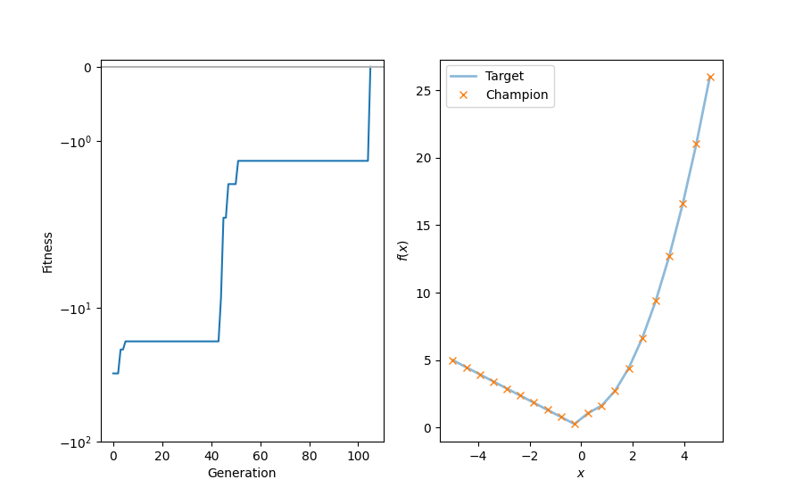

<!DOCTYPE html>
<html class="writer-html5" lang="en" >
<head>
  <meta charset="utf-8" />
  
  <meta name="viewport" content="width=device-width, initial-scale=1.0" />
  
  <title>Example for evolutionary regression with multiple genomes &mdash; hal-cgp 0.2.0 documentation</title>
  

  
  <link rel="stylesheet" href="../_static/css/msmb.css" type="text/css" />
  <link rel="stylesheet" href="../_static/pygments.css" type="text/css" />
  <link rel="stylesheet" href="../_static/gallery.css" type="text/css" />
  <link rel="stylesheet" href="../_static/gallery-binder.css" type="text/css" />
  <link rel="stylesheet" href="../_static/gallery-dataframe.css" type="text/css" />
  <link rel="stylesheet" href="../_static/gallery-rendered-html.css" type="text/css" />

  
  

  
  

  

  
  <!--[if lt IE 9]>
    <script src="../_static/js/html5shiv.min.js"></script>
  <![endif]-->
  
    
      <script type="text/javascript" id="documentation_options" data-url_root="../" src="../_static/documentation_options.js"></script>
        <script src="../_static/jquery.js"></script>
        <script src="../_static/underscore.js"></script>
        <script src="../_static/doctools.js"></script>
        <script src="../_static/language_data.js"></script>
        <script src="../_static/js/versions.js"></script>
    
    <script type="text/javascript" src="../_static/js/theme.js"></script>

    
    <link rel="index" title="Index" href="../genindex.html" />
    <link rel="search" title="Search" href="../search.html" />
    <link rel="next" title="Example for evolutionary regression with genome reordering" href="example_reorder.html" />
    <link rel="prev" title="Minimal example for evolutionary regression" href="example_minimal.html" /> 
</head>

<body class="wy-body-for-nav">

   
  <div class="wy-grid-for-nav">
    
    <nav data-toggle="wy-nav-shift" class="wy-nav-side">
      <div class="wy-side-scroll">
        <div class="wy-side-nav-search" >
          

          
            <a href="../index.html" class="icon icon-home"> hal-cgp
          

          
          </a>

          
            
            
          

          
<div role="search">
  <form id="rtd-search-form" class="wy-form" action="../search.html" method="get">
    <input type="text" name="q" placeholder="Search docs" />
    <input type="hidden" name="check_keywords" value="yes" />
    <input type="hidden" name="area" value="default" />
  </form>
</div>

          
        </div>

        
        <div class="wy-menu wy-menu-vertical" data-spy="affix" role="navigation" aria-label="main navigation">
          
            
            
              
            
            
              <ul class="current">
<li class="toctree-l1"><a class="reference internal" href="../installation.html">Installation</a></li>
<li class="toctree-l1"><a class="reference internal" href="../basic_usage.html">Basic usage</a></li>
<li class="toctree-l1"><a class="reference internal" href="../documentation/documentation.html">Documentation</a></li>
<li class="toctree-l1 current"><a class="reference internal" href="index.html">Examples</a><ul class="current">
<li class="toctree-l2"><a class="reference internal" href="example_caching.html">Example demonstrating the use of the caching decorator.</a></li>
<li class="toctree-l2"><a class="reference internal" href="example_fec_caching.html">Example demonstrating the use of the caching decorator with functional equivalance checking</a></li>
<li class="toctree-l2"><a class="reference internal" href="example_minimal.html">Minimal example for evolutionary regression</a></li>
<li class="toctree-l2 current"><a class="current reference internal" href="#">Example for evolutionary regression with multiple genomes</a></li>
<li class="toctree-l2"><a class="reference internal" href="example_reorder.html">Example for evolutionary regression with genome reordering</a></li>
<li class="toctree-l2"><a class="reference internal" href="example_hurdles.html">Minimal example for evolutionary regression using hurdles</a></li>
<li class="toctree-l2"><a class="reference internal" href="example_piecewise_target_function.html">Example for evolutionary regression on a piecewise target function</a></li>
<li class="toctree-l2"><a class="reference internal" href="example_parametrized_nodes.html">Example for evolutionary regression with parametrized nodes</a></li>
<li class="toctree-l2"><a class="reference internal" href="example_differential_evo_regression.html">Example for differential evolutionary regression</a></li>
<li class="toctree-l2"><a class="reference internal" href="example_local_search_evolution_strategies.html">Example for evolutionary regression with local search via evolution strategies</a></li>
<li class="toctree-l2"><a class="reference internal" href="example_evo_regression.html">Example for evolutionary regression</a></li>
<li class="toctree-l2"><a class="reference internal" href="example_mountain_car.html">Example: Solving an OpenAI Gym environment with CGP.</a></li>
</ul>
</li>
<li class="toctree-l1"><a class="reference internal" href="../api_reference/api_reference.html">API reference</a></li>
<li class="toctree-l1"><a class="reference internal" href="../references.html">References</a></li>
<li class="toctree-l1"><a class="reference internal" href="../citation.html">Citation</a></li>
</ul>

            
          
        </div>
        
      </div>
    </nav>

    <section data-toggle="wy-nav-shift" class="wy-nav-content-wrap">

      
      <nav class="wy-nav-top" aria-label="top navigation">
        
          <i data-toggle="wy-nav-top" class="fa fa-bars"></i>
          <a href="../index.html">hal-cgp</a>
        
      </nav>


      <div class="wy-nav-content">
        
        <div class="rst-content">
        
          


<div role="navigation" aria-label="breadcrumbs navigation">

  <ul class="wy-breadcrumbs">
    
      <li><a href="../index.html" class="icon icon-home"></a> &raquo;</li>
        
          <li><a href="index.html">Examples</a> &raquo;</li>
        
      <li>Example for evolutionary regression with multiple genomes</li>
    
    
      <li class="wy-breadcrumbs-aside">
        
          
            <a href="../_sources/auto_examples/example_multi_genome.rst.txt" rel="nofollow"> View page source</a>
          
        
      </li>
    
  </ul>

  
  <hr/>
</div>
          <div role="main" class="document" itemscope="itemscope" itemtype="http://schema.org/Article">
           <div itemprop="articleBody">
            
  <div class="sphx-glr-download-link-note admonition note">
<p class="admonition-title">Note</p>
<p>Click <a class="reference internal" href="#sphx-glr-download-auto-examples-example-multi-genome-py"><span class="std std-ref">here</span></a>
to download the full example code</p>
</div>
<div class="sphx-glr-example-title section" id="example-for-evolutionary-regression-with-multiple-genomes">
<span id="sphx-glr-auto-examples-example-multi-genome-py"></span><h1>Example for evolutionary regression with multiple genomes<a class="headerlink" href="#example-for-evolutionary-regression-with-multiple-genomes" title="Permalink to this headline">¶</a></h1>
<p>Example demonstrating the use of Cartesian genetic programming with multiple
genomes per individual for a simple regression task with a piecewise
target function.</p>
<div class="highlight-default notranslate"><div class="highlight"><pre><span></span><span class="c1"># The docopt str is added explicitly to ensure compatibility with</span>
<span class="c1"># sphinx-gallery.</span>
<span class="n">docopt_str</span> <span class="o">=</span> <span class="s2">&quot;&quot;&quot;</span>
<span class="s2">   Usage:</span>
<span class="s2">     example_multi_genome.py [--max-generations=&lt;N&gt;]</span>

<span class="s2">   Options:</span>
<span class="s2">     -h --help</span>
<span class="s2">     --max-generations=&lt;N&gt;  Maximum number of generations [default: 300]</span>
<span class="s2">&quot;&quot;&quot;</span>

<span class="kn">import</span> <span class="nn">matplotlib.pyplot</span> <span class="k">as</span> <span class="nn">plt</span>
<span class="kn">import</span> <span class="nn">numpy</span> <span class="k">as</span> <span class="nn">np</span>
<span class="kn">import</span> <span class="nn">scipy.constants</span>
<span class="kn">from</span> <span class="nn">docopt</span> <span class="kn">import</span> <span class="n">docopt</span>

<span class="kn">import</span> <span class="nn">cgp</span>

<span class="n">args</span> <span class="o">=</span> <span class="n">docopt</span><span class="p">(</span><span class="n">docopt_str</span><span class="p">)</span>
</pre></div>
</div>
<p>We first define a target function.  The function applies different
transformations to the input depending whether the input is less or greater
than or equal to zero. We thus need to fit two different functions.</p>
<div class="highlight-default notranslate"><div class="highlight"><pre><span></span><span class="k">def</span> <span class="nf">f_target</span><span class="p">(</span><span class="n">x</span><span class="p">):</span>
    <span class="k">return</span> <span class="n">np</span><span class="o">.</span><span class="n">select</span><span class="p">([</span><span class="n">x</span> <span class="o">&lt;</span> <span class="mi">0</span><span class="p">,</span> <span class="n">x</span> <span class="o">&gt;=</span> <span class="mi">0</span><span class="p">],</span> <span class="p">[</span><span class="o">-</span><span class="n">x</span><span class="p">,</span> <span class="n">x</span> <span class="o">**</span> <span class="mi">2</span> <span class="o">+</span> <span class="mf">1.0</span><span class="p">])</span>
</pre></div>
</div>
<p>Then we define the objective function for the evolution. It uses the
mean-squared error between the output of the expression represented by a given
individual and the target function evaluated on a set of random points. We
here either evaluate the function represented by the first (<code class="docutils literal notranslate"><span class="pre">f[0]</span></code>) or the second
genome (<code class="docutils literal notranslate"><span class="pre">f[1]</span></code>), depending whether the input is less or greater than zero.</p>
<div class="highlight-default notranslate"><div class="highlight"><pre><span></span><span class="k">def</span> <span class="nf">objective</span><span class="p">(</span><span class="n">individual</span><span class="p">):</span>
    <span class="k">if</span> <span class="ow">not</span> <span class="n">individual</span><span class="o">.</span><span class="n">fitness_is_None</span><span class="p">():</span>
        <span class="k">return</span> <span class="n">individual</span>

    <span class="n">n_function_evaluations</span> <span class="o">=</span> <span class="mi">1000</span>

    <span class="n">np</span><span class="o">.</span><span class="n">random</span><span class="o">.</span><span class="n">seed</span><span class="p">(</span><span class="mi">1234</span><span class="p">)</span>

    <span class="c1"># Note that f is now a list of functions because individual is an instance</span>
    <span class="c1"># of `InvidividualMultiGenome`</span>
    <span class="n">f</span> <span class="o">=</span> <span class="n">individual</span><span class="o">.</span><span class="n">to_numpy</span><span class="p">()</span>
    <span class="n">x</span> <span class="o">=</span> <span class="n">np</span><span class="o">.</span><span class="n">random</span><span class="o">.</span><span class="n">uniform</span><span class="p">(</span><span class="o">-</span><span class="mi">4</span><span class="p">,</span> <span class="mi">4</span><span class="p">,</span> <span class="p">(</span><span class="n">n_function_evaluations</span><span class="p">,</span> <span class="mi">1</span><span class="p">))</span>
    <span class="n">y</span> <span class="o">=</span> <span class="n">np</span><span class="o">.</span><span class="n">piecewise</span><span class="p">(</span><span class="n">x</span><span class="p">,</span> <span class="p">[</span><span class="n">x</span><span class="p">[:,</span> <span class="mi">0</span><span class="p">]</span> <span class="o">&lt;</span> <span class="mi">0</span><span class="p">,</span> <span class="n">x</span><span class="p">[:,</span> <span class="mi">0</span><span class="p">]</span> <span class="o">&gt;=</span> <span class="mi">0</span><span class="p">],</span> <span class="n">f</span><span class="p">)[:,</span> <span class="mi">0</span><span class="p">]</span>
    <span class="n">loss</span> <span class="o">=</span> <span class="n">np</span><span class="o">.</span><span class="n">sum</span><span class="p">((</span><span class="n">f_target</span><span class="p">(</span><span class="n">x</span><span class="p">[:,</span> <span class="mi">0</span><span class="p">])</span> <span class="o">-</span> <span class="n">y</span><span class="p">)</span> <span class="o">**</span> <span class="mi">2</span><span class="p">)</span>
    <span class="n">individual</span><span class="o">.</span><span class="n">fitness</span> <span class="o">=</span> <span class="o">-</span><span class="n">loss</span> <span class="o">/</span> <span class="n">n_function_evaluations</span>
    <span class="k">return</span> <span class="n">individual</span>
</pre></div>
</div>
<p>Next, we set up the evolutionary search. First, we define the parameters for
the population, the genomes of individuals, and the evolutionary
algorithm. Note that we define <code class="docutils literal notranslate"><span class="pre">genome_params</span></code> as a list of parameter
dictionaries which causes the population to create instances of
<code class="docutils literal notranslate"><span class="pre">InvidividualMultiGenome</span></code>.</p>
<div class="highlight-default notranslate"><div class="highlight"><pre><span></span><span class="n">population_params</span> <span class="o">=</span> <span class="p">{</span><span class="s2">&quot;n_parents&quot;</span><span class="p">:</span> <span class="mi">1</span><span class="p">,</span> <span class="s2">&quot;seed&quot;</span><span class="p">:</span> <span class="mi">8188211</span><span class="p">}</span>

<span class="n">single_genome_params</span> <span class="o">=</span> <span class="p">{</span>
    <span class="s2">&quot;n_inputs&quot;</span><span class="p">:</span> <span class="mi">1</span><span class="p">,</span>
    <span class="s2">&quot;n_outputs&quot;</span><span class="p">:</span> <span class="mi">1</span><span class="p">,</span>
    <span class="s2">&quot;n_columns&quot;</span><span class="p">:</span> <span class="mi">12</span><span class="p">,</span>
    <span class="s2">&quot;n_rows&quot;</span><span class="p">:</span> <span class="mi">1</span><span class="p">,</span>
    <span class="s2">&quot;levels_back&quot;</span><span class="p">:</span> <span class="mi">5</span><span class="p">,</span>
    <span class="s2">&quot;primitives&quot;</span><span class="p">:</span> <span class="p">(</span><span class="n">cgp</span><span class="o">.</span><span class="n">Add</span><span class="p">,</span> <span class="n">cgp</span><span class="o">.</span><span class="n">Sub</span><span class="p">,</span> <span class="n">cgp</span><span class="o">.</span><span class="n">Mul</span><span class="p">,</span> <span class="n">cgp</span><span class="o">.</span><span class="n">ConstantFloat</span><span class="p">),</span>
<span class="p">}</span>
<span class="n">genome_params</span> <span class="o">=</span> <span class="p">[</span><span class="n">single_genome_params</span><span class="p">,</span> <span class="n">single_genome_params</span><span class="p">]</span>

<span class="n">ea_params</span> <span class="o">=</span> <span class="p">{</span><span class="s2">&quot;n_offsprings&quot;</span><span class="p">:</span> <span class="mi">4</span><span class="p">,</span> <span class="s2">&quot;mutation_rate&quot;</span><span class="p">:</span> <span class="mf">0.03</span><span class="p">,</span> <span class="s2">&quot;n_processes&quot;</span><span class="p">:</span> <span class="mi">1</span><span class="p">}</span>

<span class="n">evolve_params</span> <span class="o">=</span> <span class="p">{</span><span class="s2">&quot;max_generations&quot;</span><span class="p">:</span> <span class="nb">int</span><span class="p">(</span><span class="n">args</span><span class="p">[</span><span class="s2">&quot;--max-generations&quot;</span><span class="p">]),</span> <span class="s2">&quot;min_fitness&quot;</span><span class="p">:</span> <span class="mf">0.0</span><span class="p">}</span>
</pre></div>
</div>
<p>We create a population that will be evolved</p>
<div class="highlight-default notranslate"><div class="highlight"><pre><span></span><span class="n">pop</span> <span class="o">=</span> <span class="n">cgp</span><span class="o">.</span><span class="n">Population</span><span class="p">(</span><span class="o">**</span><span class="n">population_params</span><span class="p">,</span> <span class="n">genome_params</span><span class="o">=</span><span class="n">genome_params</span><span class="p">)</span>
</pre></div>
</div>
<p>and an instance of the (mu + lambda) evolutionary algorithm</p>
<div class="highlight-default notranslate"><div class="highlight"><pre><span></span><span class="n">ea</span> <span class="o">=</span> <span class="n">cgp</span><span class="o">.</span><span class="n">ea</span><span class="o">.</span><span class="n">MuPlusLambda</span><span class="p">(</span><span class="o">**</span><span class="n">ea_params</span><span class="p">)</span>
</pre></div>
</div>
<p>We define a callback for recording of fitness over generations</p>
<div class="highlight-default notranslate"><div class="highlight"><pre><span></span><span class="n">history</span> <span class="o">=</span> <span class="p">{}</span>
<span class="n">history</span><span class="p">[</span><span class="s2">&quot;fitness_champion&quot;</span><span class="p">]</span> <span class="o">=</span> <span class="p">[]</span>


<span class="k">def</span> <span class="nf">recording_callback</span><span class="p">(</span><span class="n">pop</span><span class="p">):</span>
    <span class="n">history</span><span class="p">[</span><span class="s2">&quot;fitness_champion&quot;</span><span class="p">]</span><span class="o">.</span><span class="n">append</span><span class="p">(</span><span class="n">pop</span><span class="o">.</span><span class="n">champion</span><span class="o">.</span><span class="n">fitness</span><span class="p">)</span>
</pre></div>
</div>
<p>and finally perform the evolution</p>
<div class="highlight-default notranslate"><div class="highlight"><pre><span></span><span class="n">cgp</span><span class="o">.</span><span class="n">evolve</span><span class="p">(</span><span class="n">pop</span><span class="p">,</span> <span class="n">objective</span><span class="p">,</span> <span class="n">ea</span><span class="p">,</span> <span class="o">**</span><span class="n">evolve_params</span><span class="p">,</span> <span class="n">print_progress</span><span class="o">=</span><span class="kc">True</span><span class="p">,</span> <span class="n">callback</span><span class="o">=</span><span class="n">recording_callback</span><span class="p">)</span>
</pre></div>
</div>
<p class="sphx-glr-script-out">Out:</p>
<div class="sphx-glr-script-out highlight-none notranslate"><div class="highlight"><pre><span></span>[2/300] max fitness: -30.901735782503778
[3/300] max fitness: -30.901735782503778
[4/300] max fitness: -20.460618313162673
[5/300] max fitness: -20.460618313162673
[6/300] max fitness: -17.767232897765027
[7/300] max fitness: -17.767232897765027
[8/300] max fitness: -17.767232897765027
[9/300] max fitness: -17.767232897765027
[10/300] max fitness: -17.767232897765027
[11/300] max fitness: -17.767232897765027
[12/300] max fitness: -17.767232897765027
[13/300] max fitness: -17.767232897765027
[14/300] max fitness: -17.767232897765027
[15/300] max fitness: -17.767232897765027
[16/300] max fitness: -17.767232897765027
[17/300] max fitness: -17.767232897765027
[18/300] max fitness: -17.767232897765027
[19/300] max fitness: -17.767232897765027
[20/300] max fitness: -17.767232897765027
[21/300] max fitness: -17.767232897765027
[22/300] max fitness: -17.767232897765027
[23/300] max fitness: -17.767232897765027
[24/300] max fitness: -17.767232897765027
[25/300] max fitness: -17.767232897765027
[26/300] max fitness: -17.767232897765027
[27/300] max fitness: -17.767232897765027
[28/300] max fitness: -17.767232897765027
[29/300] max fitness: -17.767232897765027
[30/300] max fitness: -17.767232897765027
[31/300] max fitness: -17.767232897765027
[32/300] max fitness: -17.767232897765027
[33/300] max fitness: -17.767232897765027
[34/300] max fitness: -17.767232897765027
[35/300] max fitness: -17.767232897765027
[36/300] max fitness: -17.767232897765027
[37/300] max fitness: -17.767232897765027
[38/300] max fitness: -17.767232897765027
[39/300] max fitness: -17.767232897765027
[40/300] max fitness: -17.767232897765027
[41/300] max fitness: -17.767232897765027
[42/300] max fitness: -17.767232897765027
[43/300] max fitness: -17.767232897765027
[44/300] max fitness: -17.767232897765027
[45/300] max fitness: -8.357349504202604
[46/300] max fitness: -2.101173731642708
[47/300] max fitness: -2.101173731642708
[48/300] max fitness: -1.584095706383146
[49/300] max fitness: -1.584095706383146
[50/300] max fitness: -1.584095706383146
[51/300] max fitness: -1.584095706383146
[52/300] max fitness: -1.2705362372221112
[53/300] max fitness: -1.2705362372221112
[54/300] max fitness: -1.2705362372221112
[55/300] max fitness: -1.2705362372221112
[56/300] max fitness: -1.2705362372221112
[57/300] max fitness: -1.2705362372221112
[58/300] max fitness: -1.2705362372221112
[59/300] max fitness: -1.2705362372221112
[60/300] max fitness: -1.2705362372221112
[61/300] max fitness: -1.2705362372221112
[62/300] max fitness: -1.2705362372221112
[63/300] max fitness: -1.2705362372221112
[64/300] max fitness: -1.2705362372221112
[65/300] max fitness: -1.2705362372221112
[66/300] max fitness: -1.2705362372221112
[67/300] max fitness: -1.2705362372221112
[68/300] max fitness: -1.2705362372221112
[69/300] max fitness: -1.2705362372221112
[70/300] max fitness: -1.2705362372221112
[71/300] max fitness: -1.2705362372221112
[72/300] max fitness: -1.2705362372221112
[73/300] max fitness: -1.2705362372221112
[74/300] max fitness: -1.2705362372221112
[75/300] max fitness: -1.2705362372221112
[76/300] max fitness: -1.2705362372221112
[77/300] max fitness: -1.2705362372221112
[78/300] max fitness: -1.2705362372221112
[79/300] max fitness: -1.2705362372221112
[80/300] max fitness: -1.2705362372221112
[81/300] max fitness: -1.2705362372221112
[82/300] max fitness: -1.2705362372221112
[83/300] max fitness: -1.2705362372221112
[84/300] max fitness: -1.2705362372221112
[85/300] max fitness: -1.2705362372221112
[86/300] max fitness: -1.2705362372221112
[87/300] max fitness: -1.2705362372221112
[88/300] max fitness: -1.2705362372221112
[89/300] max fitness: -1.2705362372221112
[90/300] max fitness: -1.2705362372221112
[91/300] max fitness: -1.2705362372221112
[92/300] max fitness: -1.2705362372221112
[93/300] max fitness: -1.2705362372221112
[94/300] max fitness: -1.2705362372221112
[95/300] max fitness: -1.2705362372221112
[96/300] max fitness: -1.2705362372221112
[97/300] max fitness: -1.2705362372221112
[98/300] max fitness: -1.2705362372221112
[99/300] max fitness: -1.2705362372221112
[100/300] max fitness: -1.2705362372221112
[101/300] max fitness: -1.2705362372221112
[102/300] max fitness: -1.2705362372221112
[103/300] max fitness: -1.2705362372221112
[104/300] max fitness: -1.2705362372221112
[105/300] max fitness: -1.2705362372221112
[106/300] max fitness: 0.0
</pre></div>
</div>
<p>After finishing the evolution, we print the evolved expression and plot the result.</p>
<div class="highlight-default notranslate"><div class="highlight"><pre><span></span><span class="n">expr</span> <span class="o">=</span> <span class="n">pop</span><span class="o">.</span><span class="n">champion</span><span class="o">.</span><span class="n">to_sympy</span><span class="p">()</span>
<span class="nb">print</span><span class="p">(</span><span class="n">expr</span><span class="p">)</span>
<span class="nb">print</span><span class="p">(</span><span class="sa">f</span><span class="s2">&quot;--&gt; x&lt;=0: </span><span class="si">{</span><span class="n">expr</span><span class="p">[</span><span class="mi">0</span><span class="p">]</span><span class="si">}</span><span class="s2">, </span><span class="se">\n</span><span class="s2">    x&gt; 0: </span><span class="si">{</span><span class="n">expr</span><span class="p">[</span><span class="mi">1</span><span class="p">]</span><span class="si">}</span><span class="s2">&quot;</span><span class="p">)</span>

<span class="n">width</span> <span class="o">=</span> <span class="mf">9.0</span>
<span class="n">fig</span><span class="p">,</span> <span class="n">axes</span> <span class="o">=</span> <span class="n">plt</span><span class="o">.</span><span class="n">subplots</span><span class="p">(</span><span class="mi">1</span><span class="p">,</span> <span class="mi">2</span><span class="p">,</span> <span class="n">figsize</span><span class="o">=</span><span class="p">(</span><span class="n">width</span><span class="p">,</span> <span class="n">width</span> <span class="o">/</span> <span class="n">scipy</span><span class="o">.</span><span class="n">constants</span><span class="o">.</span><span class="n">golden</span><span class="p">))</span>

<span class="n">ax_fitness</span><span class="p">,</span> <span class="n">ax_function</span> <span class="o">=</span> <span class="n">axes</span><span class="p">[</span><span class="mi">0</span><span class="p">],</span> <span class="n">axes</span><span class="p">[</span><span class="mi">1</span><span class="p">]</span>
<span class="n">ax_fitness</span><span class="o">.</span><span class="n">set_xlabel</span><span class="p">(</span><span class="s2">&quot;Generation&quot;</span><span class="p">)</span>
<span class="n">ax_fitness</span><span class="o">.</span><span class="n">set_ylabel</span><span class="p">(</span><span class="s2">&quot;Fitness&quot;</span><span class="p">)</span>

<span class="n">ax_fitness</span><span class="o">.</span><span class="n">plot</span><span class="p">(</span><span class="n">history</span><span class="p">[</span><span class="s2">&quot;fitness_champion&quot;</span><span class="p">],</span> <span class="n">label</span><span class="o">=</span><span class="s2">&quot;Champion&quot;</span><span class="p">)</span>

<span class="n">ax_fitness</span><span class="o">.</span><span class="n">set_yscale</span><span class="p">(</span><span class="s2">&quot;symlog&quot;</span><span class="p">)</span>
<span class="n">ax_fitness</span><span class="o">.</span><span class="n">set_ylim</span><span class="p">(</span><span class="o">-</span><span class="mf">1.0e2</span><span class="p">,</span> <span class="mf">0.1</span><span class="p">)</span>
<span class="n">ax_fitness</span><span class="o">.</span><span class="n">axhline</span><span class="p">(</span><span class="mf">0.0</span><span class="p">,</span> <span class="n">color</span><span class="o">=</span><span class="s2">&quot;0.7&quot;</span><span class="p">)</span>

<span class="n">f</span> <span class="o">=</span> <span class="n">pop</span><span class="o">.</span><span class="n">champion</span><span class="o">.</span><span class="n">to_numpy</span><span class="p">()</span>
<span class="n">x</span> <span class="o">=</span> <span class="n">np</span><span class="o">.</span><span class="n">linspace</span><span class="p">(</span><span class="o">-</span><span class="mf">5.0</span><span class="p">,</span> <span class="mf">5.0</span><span class="p">,</span> <span class="mi">20</span><span class="p">)[:,</span> <span class="n">np</span><span class="o">.</span><span class="n">newaxis</span><span class="p">]</span>

<span class="n">y</span> <span class="o">=</span> <span class="n">np</span><span class="o">.</span><span class="n">piecewise</span><span class="p">(</span><span class="n">x</span><span class="p">,</span> <span class="p">[</span><span class="n">x</span><span class="p">[:,</span> <span class="mi">0</span><span class="p">]</span> <span class="o">&lt;</span> <span class="mi">0</span><span class="p">,</span> <span class="n">x</span><span class="p">[:,</span> <span class="mi">0</span><span class="p">]</span> <span class="o">&gt;=</span> <span class="mi">0</span><span class="p">],</span> <span class="n">f</span><span class="p">)[:,</span> <span class="mi">0</span><span class="p">]</span>
<span class="n">y_target</span> <span class="o">=</span> <span class="n">f_target</span><span class="p">(</span><span class="n">x</span><span class="p">[:,</span> <span class="mi">0</span><span class="p">])</span>

<span class="n">ax_function</span><span class="o">.</span><span class="n">plot</span><span class="p">(</span><span class="n">x</span><span class="p">,</span> <span class="n">y_target</span><span class="p">,</span> <span class="n">lw</span><span class="o">=</span><span class="mi">2</span><span class="p">,</span> <span class="n">alpha</span><span class="o">=</span><span class="mf">0.5</span><span class="p">,</span> <span class="n">label</span><span class="o">=</span><span class="s2">&quot;Target&quot;</span><span class="p">)</span>
<span class="n">ax_function</span><span class="o">.</span><span class="n">plot</span><span class="p">(</span><span class="n">x</span><span class="p">,</span> <span class="n">y</span><span class="p">,</span> <span class="s2">&quot;x&quot;</span><span class="p">,</span> <span class="n">label</span><span class="o">=</span><span class="s2">&quot;Champion&quot;</span><span class="p">)</span>
<span class="n">ax_function</span><span class="o">.</span><span class="n">legend</span><span class="p">()</span>
<span class="n">ax_function</span><span class="o">.</span><span class="n">set_ylabel</span><span class="p">(</span><span class="sa">r</span><span class="s2">&quot;$f(x)$&quot;</span><span class="p">)</span>
<span class="n">ax_function</span><span class="o">.</span><span class="n">set_xlabel</span><span class="p">(</span><span class="sa">r</span><span class="s2">&quot;$x$&quot;</span><span class="p">)</span>

<span class="n">fig</span><span class="o">.</span><span class="n">savefig</span><span class="p">(</span><span class="s2">&quot;example_multi_genome.pdf&quot;</span><span class="p">,</span> <span class="n">dpi</span><span class="o">=</span><span class="mi">300</span><span class="p">)</span>
</pre></div>
</div>

<p class="sphx-glr-script-out">Out:</p>
<div class="sphx-glr-script-out highlight-none notranslate"><div class="highlight"><pre><span></span>[[-x_0], [x_0**2 + 1.0]]
--&gt; x&lt;=0: [-x_0],
    x&gt; 0: [x_0**2 + 1.0]
</pre></div>
</div>
<p class="sphx-glr-timing"><strong>Total running time of the script:</strong> ( 0 minutes  0.803 seconds)</p>
<div class="sphx-glr-footer class sphx-glr-footer-example docutils container" id="sphx-glr-download-auto-examples-example-multi-genome-py">
<div class="sphx-glr-download sphx-glr-download-python docutils container">
<p><a class="reference download internal" download="" href="../_downloads/9ec8da952a802d0f55f82eabeed987b1/example_multi_genome.py"><code class="xref download docutils literal notranslate"><span class="pre">Download</span> <span class="pre">Python</span> <span class="pre">source</span> <span class="pre">code:</span> <span class="pre">example_multi_genome.py</span></code></a></p>
</div>
<div class="sphx-glr-download sphx-glr-download-jupyter docutils container">
<p><a class="reference download internal" download="" href="../_downloads/262a228e60fbc3c8dfd0e7c5685b36e7/example_multi_genome.ipynb"><code class="xref download docutils literal notranslate"><span class="pre">Download</span> <span class="pre">Jupyter</span> <span class="pre">notebook:</span> <span class="pre">example_multi_genome.ipynb</span></code></a></p>
</div>
</div>
<p class="sphx-glr-signature"><a class="reference external" href="https://sphinx-gallery.github.io">Gallery generated by Sphinx-Gallery</a></p>
</div>


           </div>
           
          </div>
          <footer>
    <div class="rst-footer-buttons" role="navigation" aria-label="footer navigation">
        <a href="example_reorder.html" class="btn btn-neutral float-right" title="Example for evolutionary regression with genome reordering" accesskey="n" rel="next">Next <span class="fa fa-arrow-circle-right" aria-hidden="true"></span></a>
        <a href="example_minimal.html" class="btn btn-neutral float-left" title="Minimal example for evolutionary regression" accesskey="p" rel="prev"><span class="fa fa-arrow-circle-left" aria-hidden="true"></span> Previous</a>
    </div>

  <hr/>

  <div role="contentinfo">
    <p>
        &#169; Copyright 2020, Happy Algorithms League.

    </p>
  </div> 

</footer>
        </div>
      </div>

    </section>

  </div>
  <script>
    var versions_json_url = ''
</script>

<div class="rst-versions" data-toggle="rst-versions" role="note"
     aria-label="versions">
    <span class="rst-current-version" data-toggle="rst-current-version">
      <span class="fa fa-book"></span>
        0.2.0
      <span class="fa fa-caret-down"></span>
    </span>

    <div class="rst-other-versions">
        <dl id="versionselector">
            <dt>Other Versions</dt>
        </dl>

    </div>
</div>

  <script type="text/javascript">
      jQuery(function () {
          SphinxRtdTheme.Navigation.enable(true);
      });
  </script>

  
  
    
   

</body>
</html>